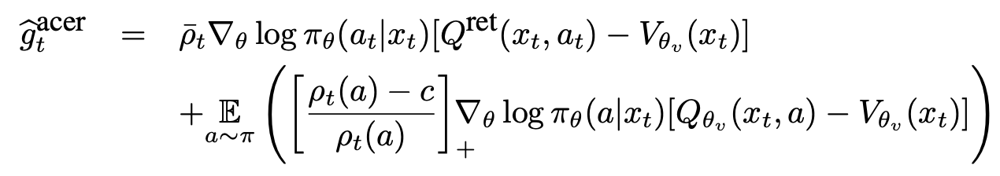
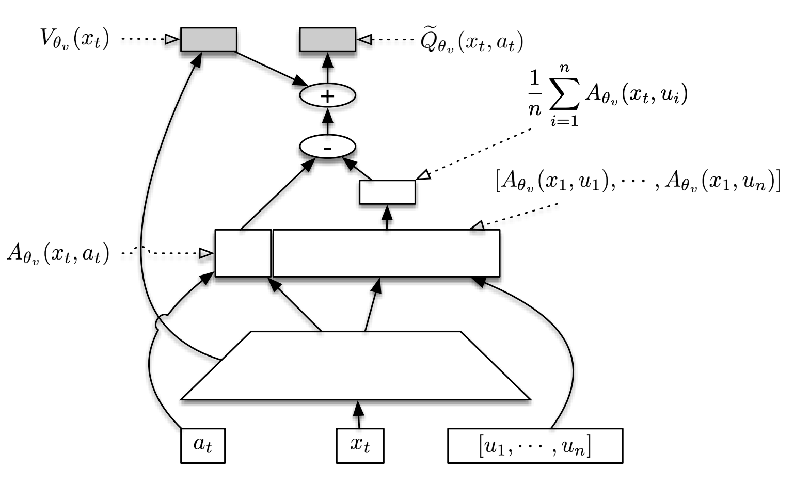
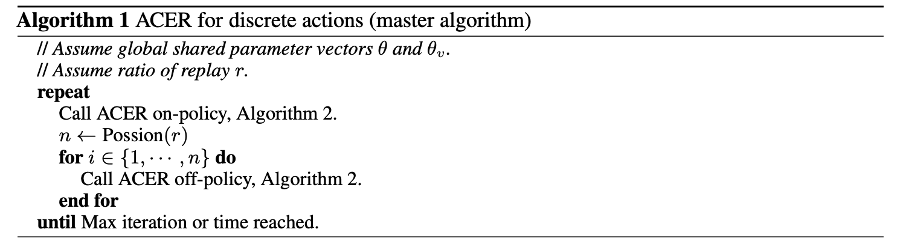
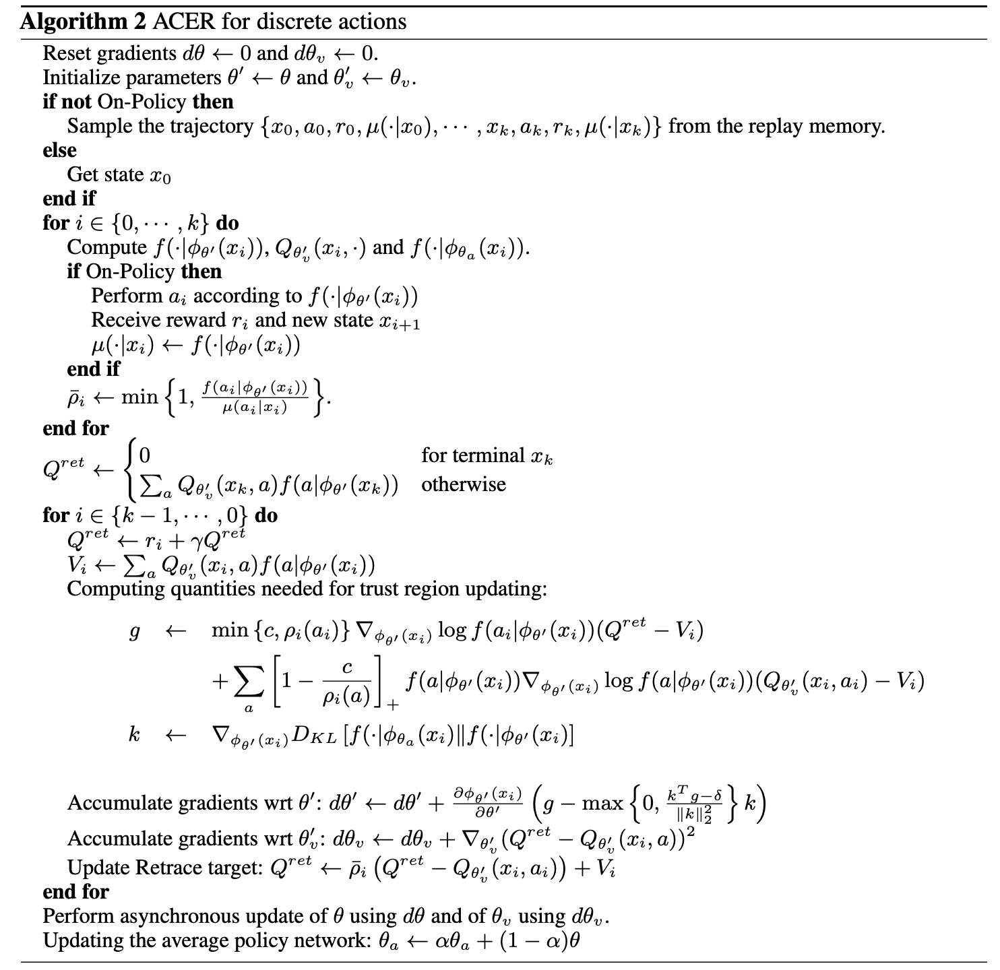
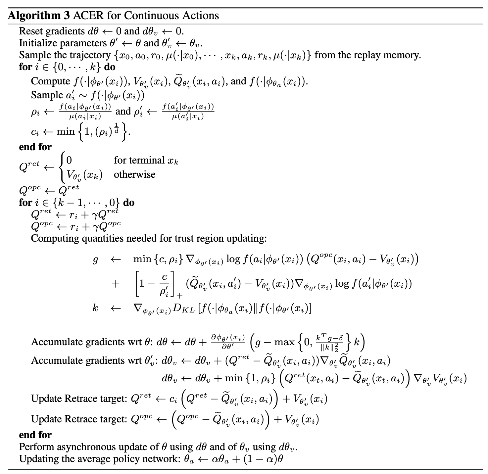
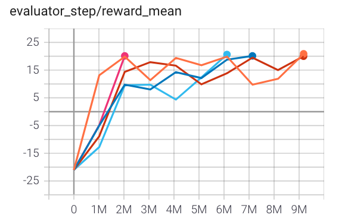
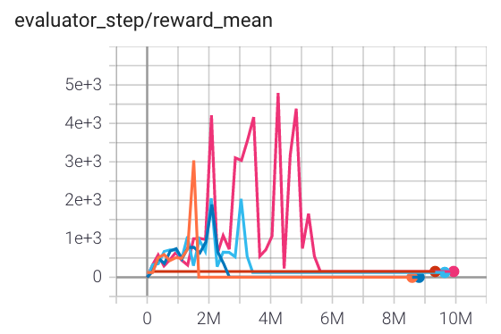
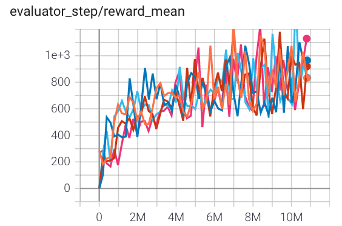

ACER¶
Overview¶
ACER, short for actor-critic with experience replay, presents an actor-critic deep reinforcement learning agent with experience replay that is stable, sample efficient, and performs remarkably well on challenging environments, including the discrete 57-game Atari domain and several continuous control problems. It greatly increases the sample efficiency and decreases the data correlation by using the following tricks:
Truncated importance sampling with bias correction, which controls the stability of the off-policy estimator
Retrace Q value estimation, which is an off-policy, low variance, and return-based algorithm, and has been proven to converge
Efficient TRPO (Trust Region Policy Optimization), which scales well to large problems
Stochastic Dueling Networks (SDNs), which is designed to estimate both \(V^\pi\) and \(Q^\pi\) off-policy while maintaining consistency between the two estimates
You can find more details in the paper Sample Efficient Actor-Critic with Experience Replay.
Quick Facts¶
ACER is a model-free and off-policy RL algorithm.
ACER supports both discrete action spaces and continuous action spaces with several differences.
ACER is an actor-critic RL algorithm, which optimizes the actor and critic networks respectively.
ACER decouples acting from learning. Collectors in ACER need to record behavior probability distributions.
In the following sections, we take the discrete case as an example to elaborate on ACER algorithm.
Key Equations¶
Loss used in ACER contains policy loss and value loss. They are updated separately, so it’s necessary to control their relative update speeds.
Retrace Q-value estimation¶
Given a trajectory generated under the behavior policy \(\mu\), we retrieve a trajectory \({x_0, a_0, r_0, \mu(\cdot|x_0),..., x_k, a_k, r_k, \mu(\cdot|x_k)}\) the Retrace estimator can be expressed recursively as follows:
where \(\bar{\rho}_t\) is the truncated importance weight, \(\bar{\rho}_t=\min\{c,\rho\}\) with \(\frac{\pi(a_t|x_t)}{\mu(a_t|x_t)}\). \(\pi\) is the target policy. Retrace is an off-policy, return based algorithm which has low variance and is proven to converge to the value function of the target policy for any behavior policy. We approximate the Q value by neural network \(Q_{\theta}\). We use a mean squared error loss:
\[{\text{value}}=\frac{1}{2}(Q^{\text{ret}}(x_t,a_t)-Q_{\theta}(x_t,a_t))^2.\]
Policy Gradient¶
To safe-guard against high variance, ACER uses truncated importance weights and introduces correction term via the following decomposition of \(g^{acer}\):
{kind=link}
To ensure stability, ACER limits the per-step change to the policy by solving the following linearized KL divergence constraint:
The \(\phi(\theta)\) is the target policy network and the \(\phi(\theta_a)\) is the average policy network. By letting \(k=\nabla_{\phi_{\theta}(x_t)}D_{KL}[f(\cdot|\phi_{\theta_a}(x_t))\|f(\cdot|\phi_{\theta}(x_t))]\), the solution can be easily derived in closed form using the KKT condition:
Key Graph or Network Structure¶
The following graph depicts the SDN structure (picture from paper Sample Efficient Actor-Critic with Experience Replay). In the drawing, \([u_1, .... , u_n]\) are assumed to be samples from \(\pi_\theta(·|x_t)\).
{kind=link}
Pseudo-code¶
There are a few changes between ACER applied to discrete action spaces and that applied to continuous action space.
 {kind=link}
{kind=link}
In continuous action space, it is impossible to enumerate Q values for every action. So ACER uses the sampled actions to approximate the expected value.
{kind=link}
Implementations¶
Here we show the ACER algorithm on the discrete action space. The default config is defined as follows:
- class ding.policy.acer.ACERPolicy(cfg: dict, model: Optional[Union[type, torch.nn.modules.module.Module]] = None, enable_field: Optional[List[str]] = None)[source]¶
- Overview:
Policy class of ACER algorithm.
- Config:
ID
Symbol
Type
Default Value
Description
Other(Shape)
1
typestr
acer
RL policy register name, refer toregistryPOLICY_REGISTRYthis arg is optional,a placeholder2
cudabool
False
Whether to use cuda for networkthis arg can be diff-erent from modes3
on_policybool
False
Whether the RL algorithm ison-policy or off-policy4
trust_regionbool
True
Whether the RL algorithm use trustregion constraint5
trust_region_valuefloat
1.0
maximum range of the trust region6
unroll_lenint
32
trajectory length to calculateQ retrace target7
learn.updateper_collectint
4
How many updates(iterations) totrain after collector’s onecollection. Onlyvalid in serial trainingthis args can be varyfrom envs. Bigger valmeans more off-policy8
c_clip_ratiofloat
1.0
clip ratio of importance weights
Usually, we hope to compute everything as a batch to improve efficiency. This is done in policy._get_train_sample.
Once we execute this function in collector, the length of samples will equal to unroll-len in config. For details, please
refer to doc of ding.rl_utils.adder.
The whole code of ACER you can find here. Here we show some details of this algorithm.
First, we use the following functions to compute the retrace Q value.
def compute_q_retraces(
q_values: torch.Tensor,
v_pred: torch.Tensor,
rewards: torch.Tensor,
actions: torch.Tensor,
weights: torch.Tensor,
ratio: torch.Tensor,
gamma: float = 0.9
) -> torch.Tensor:
rewards = rewards.unsqueeze(-1) # shape T,B,1
actions = actions.unsqueeze(-1) # shape T,B,1
weights = weights.unsqueeze(-1) # shape T,B,1
q_retraces = torch.zeros_like(v_pred) # shape (T+1),B,1
n_len = q_retraces.size()[0] # T+1
tmp_retraces = v_pred[-1, ...] # shape B,1
q_retraces[-1, ...] = v_pred[-1, ...]
q_gather = torch.zeros_like(v_pred)
q_gather[0:-1, ...] = q_values[0:-1, ...].gather(-1, actions) # shape (T+1),B,1
ratio_gather = ratio.gather(-1, actions) # shape T,B,1
for idx in reversed(range(n_len - 1)):
q_retraces[idx, ...] = rewards[idx, ...] + gamma * weights[idx, ...] * tmp_retraces
tmp_retraces = ratio_gather[idx, ...].clamp(max=1.0) * (q_retraces[idx, ...] - q_gather[idx, ...]) + v_pred[idx, ...]
return q_retraces # shape (T+1),B,1
After that, we calculate the value of policy loss, it will calculate the actor loss with importance weights truncation and bias correction loss by the following function
def acer_policy_error(
q_values: torch.Tensor,
q_retraces: torch.Tensor,
v_pred: torch.Tensor,
target_logit: torch.Tensor,
actions: torch.Tensor,
ratio: torch.Tensor,
c_clip_ratio: float = 10.0
) -> Tuple[torch.Tensor, torch.Tensor]:
"""
Overview:
Get ACER policy loss
Arguments:
- q_values (:obj:`torch.Tensor`): Q values
- q_retraces (:obj:`torch.Tensor`): Q values (be calculated by retrace method)
- v_pred (:obj:`torch.Tensor`): V values
- target_pi (:obj:`torch.Tensor`): The new policy's probability
- actions (:obj:`torch.Tensor`): The actions in replay buffer
- ratio (:obj:`torch.Tensor`): ratio of new polcy with behavior policy
- c_clip_ratio (:obj:`float`): clip value for ratio
Returns:
- actor_loss (:obj:`torch.Tensor`): policy loss from q_retrace
- bc_loss (:obj:`torch.Tensor`): correct policy loss
Shapes:
- q_values (:obj:`torch.FloatTensor`): :math:`(T, B, N)`, where B is batch size and N is action dim
- q_retraces (:obj:`torch.FloatTensor`): :math:`(T, B, 1)`
- v_pred (:obj:`torch.FloatTensor`): :math:`(T, B, 1)`
- target_pi (:obj:`torch.FloatTensor`): :math:`(T, B, N)`
- actions (:obj:`torch.LongTensor`): :math:`(T, B)`
- ratio (:obj:`torch.FloatTensor`): :math:`(T, B, N)`
- actor_loss (:obj:`torch.FloatTensor`): :math:`(T, B, 1)`
- bc_loss (:obj:`torch.FloatTensor`): :math:`(T, B, 1)`
"""
actions = actions.unsqueeze(-1)
with torch.no_grad():
advantage_retraces = q_retraces - v_pred # shape T,B,1
advantage_native = q_values - v_pred # shape T,B,env_action_shape
actor_loss = ratio.gather(-1, actions).clamp(max=c_clip_ratio) * advantage_retraces * target_logit.gather(
-1, actions
) # shape T,B,1
# bias correction term, the first target_pi will not calculate gradient flow
bias_correction_loss = (1.0-c_clip_ratio/(ratio+EPS)).clamp(min=0.0)*torch.exp(target_logit).detach() * \
advantage_native*target_logit # shape T,B,env_action_shape
bias_correction_loss = bias_correction_loss.sum(-1, keepdim=True)
return actor_loss, bias_correction_loss
Then, we execute backward operation towards target_pi. Moreover, we need to calculate the correction gradient in the trust region:
def acer_trust_region_update(
actor_gradients: List[torch.Tensor], target_logit: torch.Tensor, avg_logit: torch.Tensor,
trust_region_value: float
) -> List[torch.Tensor]:
"""
Overview:
calcuate gradient with trust region constrain
Arguments:
- actor_gradients (:obj:`list(torch.Tensor)`): gradients value's for different part
- target_pi (:obj:`torch.Tensor`): The new policy's probability
- avg_pi (:obj:`torch.Tensor`): The average policy's probability
- trust_region_value (:obj:`float`): the range of trust region
Returns:
- update_gradients (:obj:`list(torch.Tensor)`): gradients with trust region constraint
Shapes:
- target_pi (:obj:`torch.FloatTensor`): :math:`(T, B, N)`
- avg_pi (:obj:`torch.FloatTensor`): :math:`(T, B, N)`
"""
with torch.no_grad():
KL_gradients = [torch.exp(avg_logit)]
update_gradients = []
# TODO: here is only one elements in this list.Maybe will use to more elements in the future
actor_gradient = actor_gradients[0]
KL_gradient = KL_gradients[0]
scale = actor_gradient.mul(KL_gradient).sum(-1, keepdim=True) - trust_region_value
scale = torch.div(scale, KL_gradient.mul(KL_gradient).sum(-1, keepdim=True)).clamp(min=0.0)
update_gradients.append(actor_gradient - scale * KL_gradient)
return update_gradients
With the new gradients, we can continue to propagate backwardly and then update parameters accordingly.
Finally, we should calculate the mean squared loss for Q values to update Q-Network
def acer_value_error(q_values, q_retraces, actions):
"""
Overview:
Get ACER critic loss
Arguments:
- q_values (:obj:`torch.Tensor`): Q values
- q_retraces (:obj:`torch.Tensor`): Q values (be calculated by retrace method)
- actions (:obj:`torch.Tensor`): The actions in replay buffer
- ratio (:obj:`torch.Tensor`): ratio of new polcy with behavior policy
Returns:
- critic_loss (:obj:`torch.Tensor`): critic loss
Shapes:
- q_values (:obj:`torch.FloatTensor`): :math:`(T, B, N)`, where B is batch size and N is action dim
- q_retraces (:obj:`torch.FloatTensor`): :math:`(T, B, 1)`
- actions (:obj:`torch.LongTensor`): :math:`(T, B)`
- critic_loss (:obj:`torch.FloatTensor`): :math:`(T, B, 1)`
"""
actions = actions.unsqueeze(-1)
critic_loss = 0.5 * (q_retraces - q_values.gather(-1, actions)).pow(2)
return
Benchmark¶
environment |
best mean reward |
evaluation results |
config link |
comparison |
|---|---|---|---|---|
Pong (PongNoFrameskip-v4) |
20 |
 | ||
Qbert (QbertNoFrameskip-v4) |
4000(todo) |
 | ||
SpaceInvaders (SpaceInvadersNoFrame skip-v4) |
1100 |
 |
References¶
Ziyu Wang, Victor Bapst, Nicolas Heess, Volodymyr Mnih, Remi Munos, Koray Kavukcuoglu, Nando de Freitas: “Sample Efficient Actor-Critic with Experience Replay”, 2016; [https://arxiv.org/abs/1611.01224 arxiv:1611.01224].